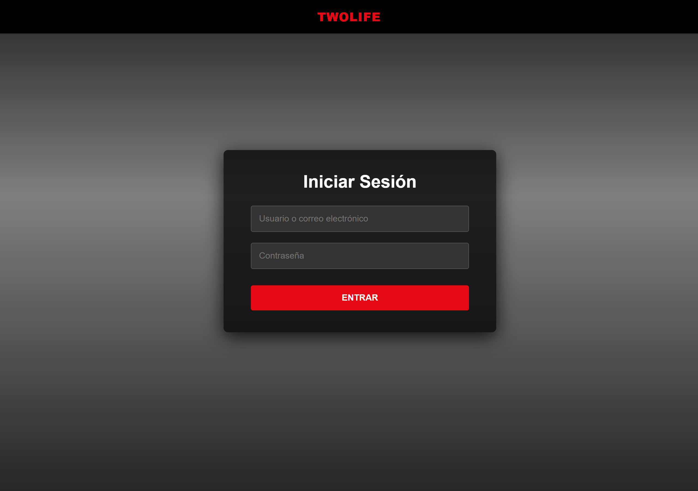
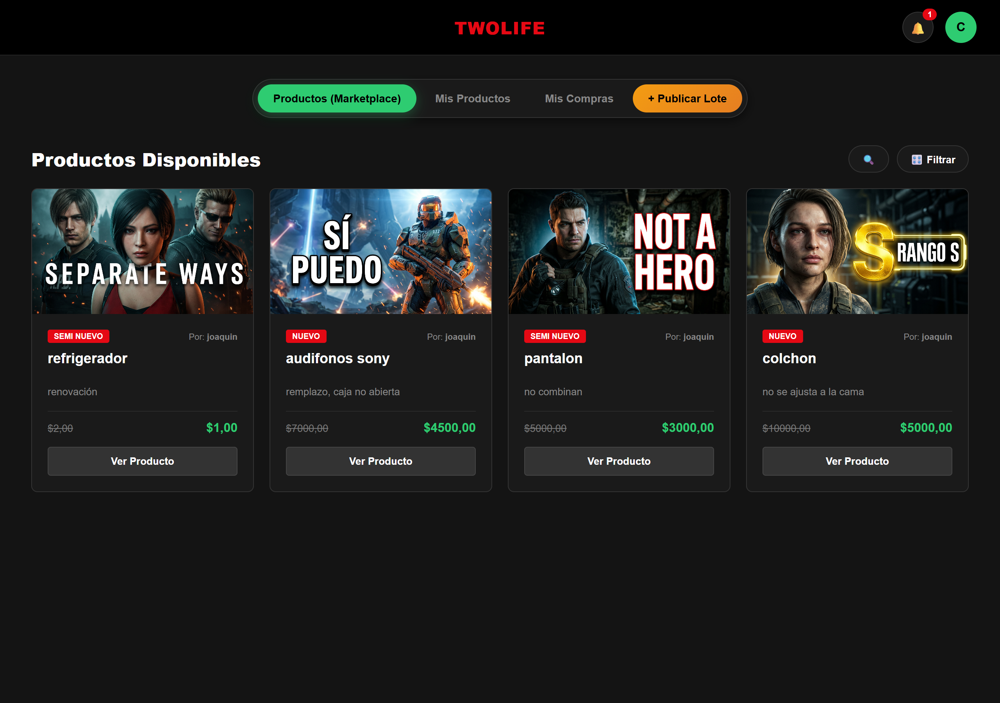
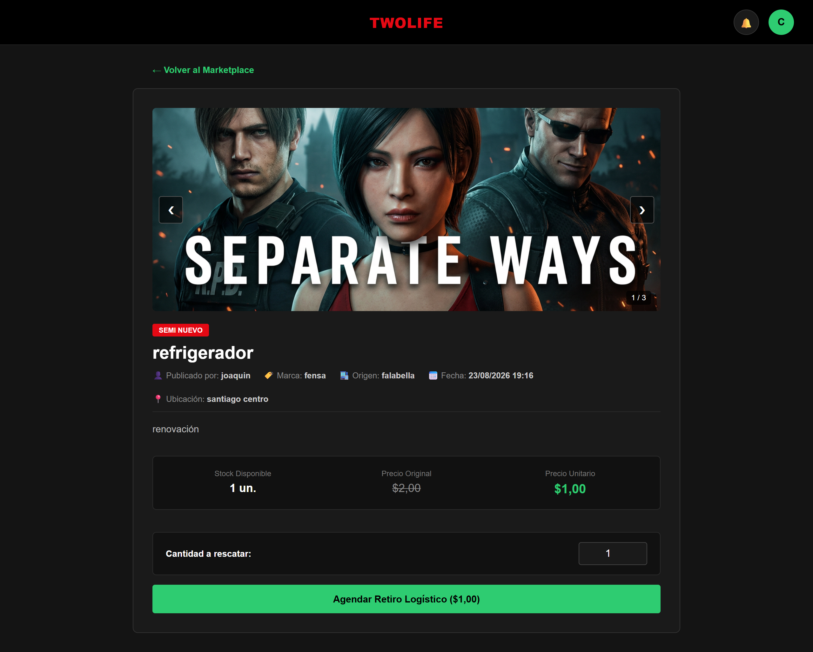
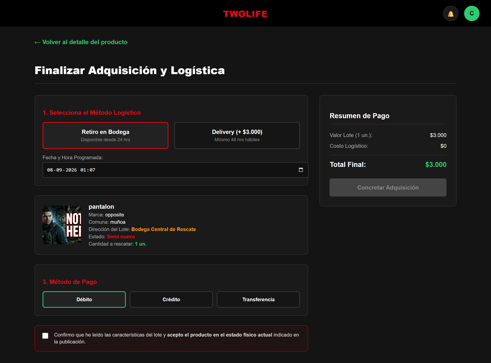
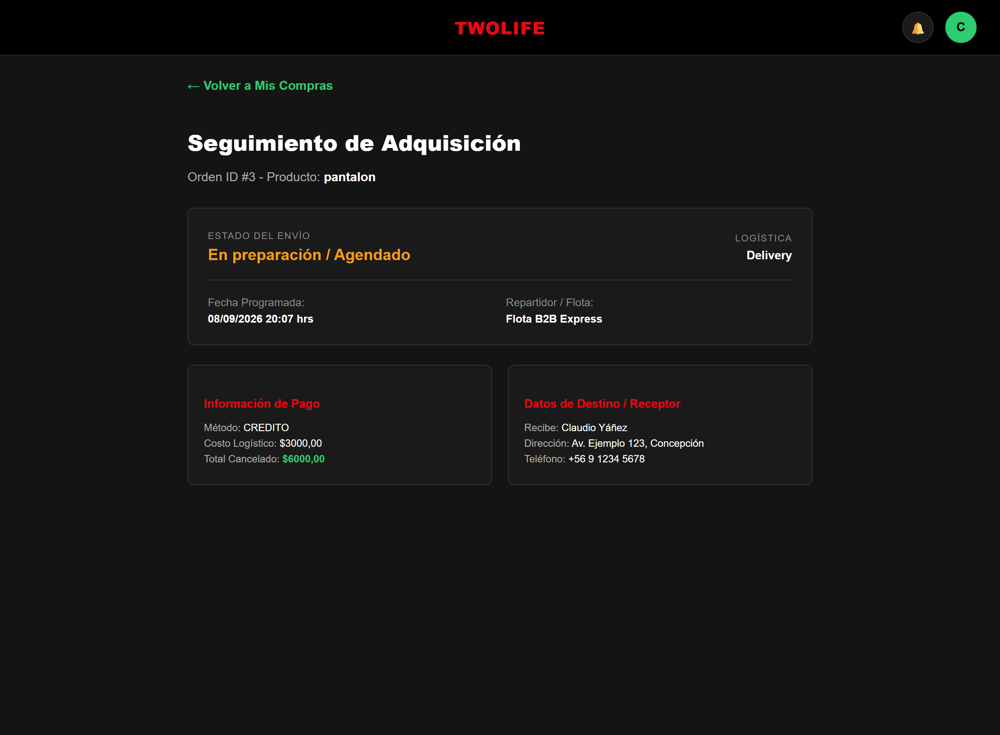
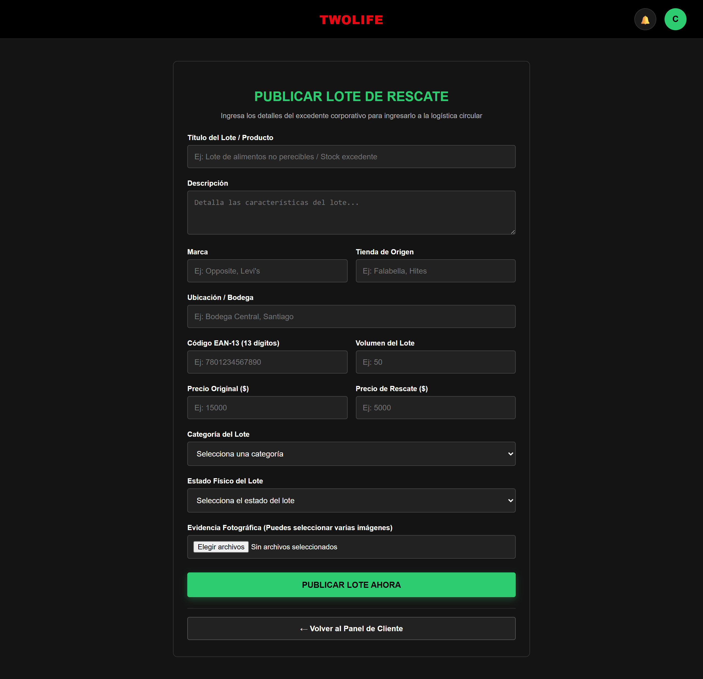
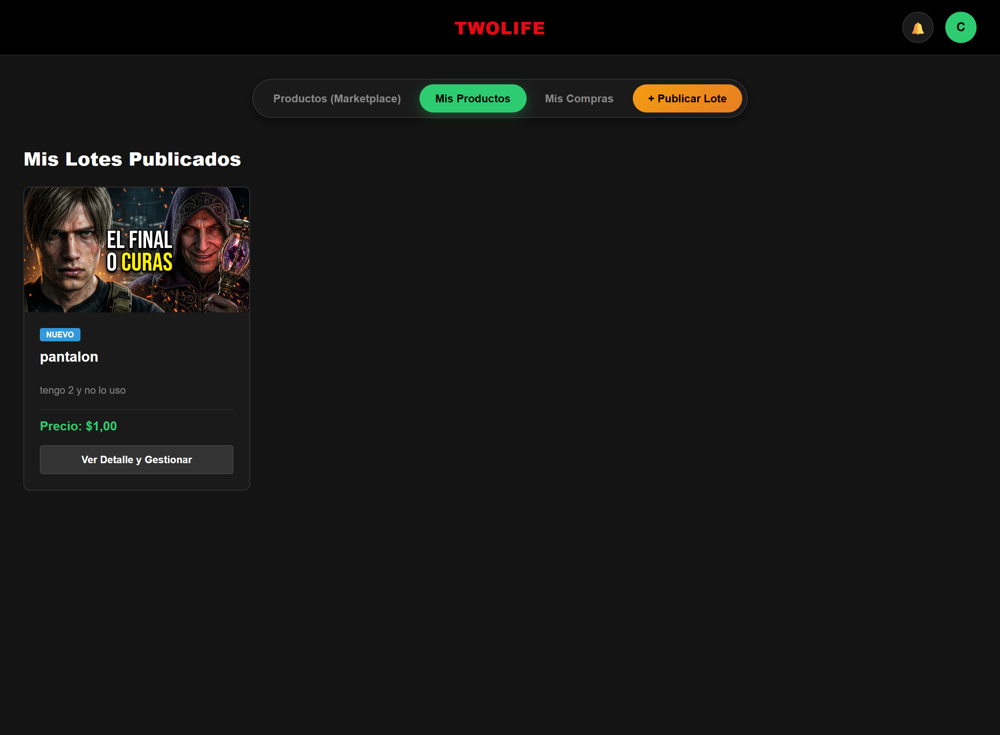
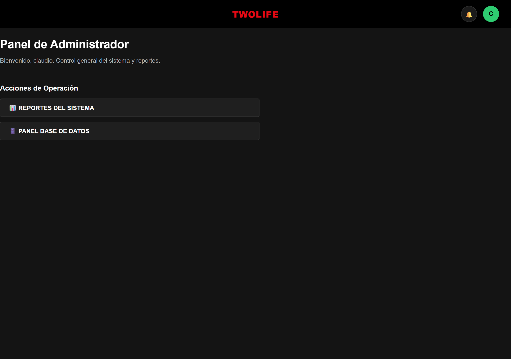
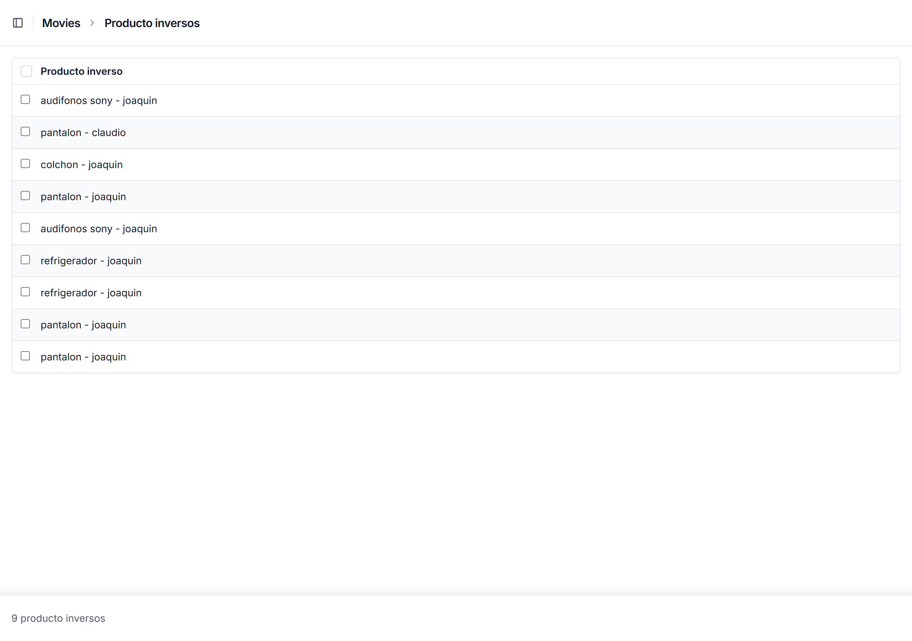

Sistema de Logística Inversa · APTC106 — Taller de Desarrollo Web y Móvil
Sumativa 4 — Propuesta de Solución · Joaquín Olivares · Javiera Chávez · Claudio Yáñez
Plataforma web para la publicación, adquisición y gestión logística de productos provenientes de procesos de logística inversa en el comercio electrónico: excedentes, devoluciones y stock de rescate que las empresas reincorporan al circuito comercial en lugar de descartarlos.
Esta página es la vista de presentación del prototipo. El aplicativo funcional se ejecuta localmente siguiendo el README; la evidencia de funcionamiento se muestra en las capturas de abajo.
| Rol | Acciones principales |
|---|---|
| Cliente / Comprador B2B | Explora el Marketplace, filtra por categoría, adquiere lotes (retiro o delivery), paga y hace seguimiento de sus compras. |
| Empresa / Proveedor | Publica y administra lotes de rescate, gestiona imágenes y stock, aplica borrado lógico. |
| Ejecutivo / Operador de Logística | Coordina retiros, genera etiquetas de despacho (código EAN) y ejecuta envíos. |
| Ejecutivo de Postventa | Revisa solicitudes, valida evidencia fotográfica y autoriza devoluciones. |
| Administrador | Accede a todos los paneles, indicadores del sistema y descarga de reportes. |
Publicación de lote → Marketplace → Adquisición → Gestión logística → Seguimiento









cd simple-crud-django-master python -m venv venv venv\Scripts\activate pip install -r requierements.txt python manage.py migrate python manage.py runserver
Abrir http://127.0.0.1:8000/
Django 6 · SQLite · django-unfold · django-widget-tweaks · Pillow · HTML / CSS / JavaScript